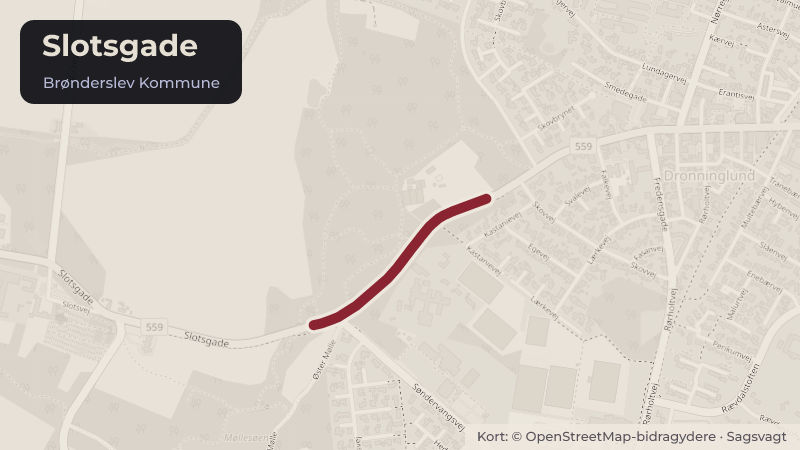

Besluttet 17. august, Teknisk Udvalg, Brønderslev
Arkitektonisk udtryk for Rema 1000 ved Slotsgade, Dronninglund

Kort fortalt
- Hvem
- Teknisk Udvalg, Brønderslev Kommune
- Hvornår
- Mandag 17. august 2026
- Status
- Besluttet. H.C. Godkendt.Beslutningen er forkortet her. Læs hele beslutningen
Er noget forkert her? Skriv til os
Læs hele sagen Kommunens egen tekst
Sagsfremstilling
Byrådet har 25. marts 2026 besluttet at igangsætte planlægningen med et vilkår om, at der
skulle ske en arkitektonisk tilpasning af projektet. En ekstern konsulent har derfor i samarbejde
med fagforvaltningen udarbejdet et notat, der beskriver, hvordan bygningen kan indpasses
respektfuldt i Slotsgade. Notatet fokuserer bl.a. på bygningens udtryk, placering, materialer,
facader samt den visuelle påvirkning af ankomsten til byen.
Efterfølgende udarbejdede ansøger tre forslag til bygningens udformning, som Teknisk Udvalg
behandlede den 8. juni 2026. Forslagene blev ikke godkendt, og udvalget ønskede et nyt
forslag med udgangspunkt i anbefalingerne i notatet.
Ansøger har derfor udarbejdet et nyt forslag til bygningens udformning.
Nyt forslag til bygningens udformning
Det nye forslag viser en bygning, som er i én etage mod nord og i to etager mod syd ved
Slotsgade. Bygningen har fladt tag. Dagligvarebutikken er placeret i stueetagen, mens der er
placeret boliger på 1. sal. Indgangspartiet til butikken er placeret delvist mod Slotsgade og
delvist mod parkeringspladsen vest for butikken. Bygningen fremstår i røde tegl med detaljering
i murværket. Facaden er inddelt i felter, og vinduerne er placeret rytmisk inden for felterne mod
Slotsgade og mod parkeringspladsen. Mod øst er der alene vinduer på 1. sal. Arealet på 6 m
mellem gaden og butikken er begrønnet, og under blodbøgen er der ligeledes etableret
begrønning samt mulighed for ophold. Der er etableret cykelparkering langs facaden mod
Slotsgade. Facadelængden mod Slotsgade udgør 32 meter og 37,5 meter i dybden ind på
grunden. Bygningshøjden er 8,5 meter, hvor der samtidig er boliger og 4,5 meter hvor der blot
er dagligvarebutik.
Forslaget til arkitektonisk udformning tager udgangspunkt i det tidligere nævnte notat, og
overholder overordnet set anbefalingerne. På enkelte punkter er der dog ikke nøjagtig
overensstemmelse mellem notatet og det nye forslag. Det drejer sig om vinduesproportioner,
andel af vinduesareal i stueetagen samt at dagligvarebutikken ikke bliver præcis samme højde
som den overforliggende bankbygning. Forholdene er beskrevet og begrundet i
projektmaterialet.
Projektmaterialet viser også, hvordan bygningen vil fremstå i sammenhæng med den øvrige
bebyggelse i Slotsgade. Bygningen og de nærmeste omgivelser er indsat på gadefotos, så
projektet kan ses i sammenhæng med den eksisterende by og den bevaringsværdige blodbøg.
Projektet omfatter etablering af boliger på 1. sal. Det betyder, at bygningen bliver i to etager,
som det anbefales i notatet. Ansøger har oplyst, at de ønsker at etablere boligerne.
Personalemæssige konsekvenser
Ingen.
Tidligere beslutning
Teknisk Udvalg besluttede den 8. juni 2026, punkt 6, ikke at godkende de tre fremlagte
forslag til arkitektonisk udtryk.
H.C. Holst (V) blev erklæret inhabil og deltog ikke i punktet.
Punkt 1-3 Ikke godkendt.
Udvalget ønsker et nyt forslag med udgangspunkt i arkitektens anbefalinger i notatet (bilag 12).
Der skal være særligt fokus på arkitektens anbefaling om at byggeriet opføres i 2 eller 2 1/2
etager, min. 6 meter til vejskel, beplantning mellem fortov og nybyggeri, at blodbøgen tydeligt
ses som et karaktergivende element i Slotsgade og at der sikres en velafbalanceret
facaderytme med en opdeling af facaderne.
Indstilling
Fagforvaltningen for Klima, Teknik og Kultur indstiller, at Teknisk Udvalg beslutter,
om:
1. fagforvaltningen skal forsætte planlægningen ud fra det nye arkitektonisk udtryk
Beslutning
H.C. Holst (V) blev erklæret inhabil og deltog ikke i behandlingen af sagen.
Godkendt.
Kilde: Brønderslev Kommune, Teknisk Udvalg, referat fra mødet mandag 17. august 2026, punkt 4. Læs den originale sag hos kommunen.
Bydele i sagen: Dronninglund
Steder i sagen: Slotsgade